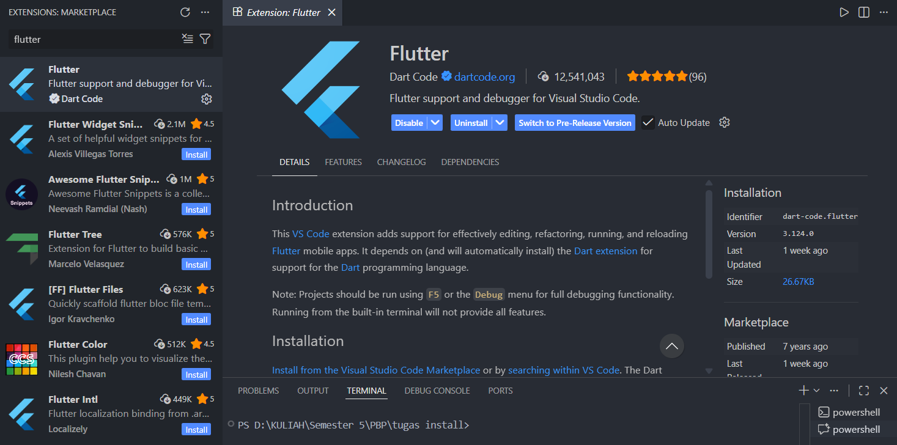
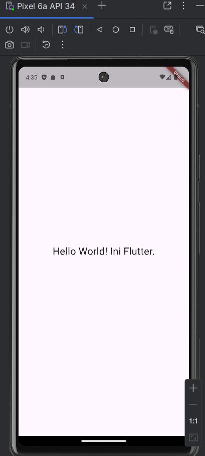

Instalasi Flutter & Project HelloWorld
1 Download & Ekstrak Flutter SDK
Buka browser, ke link ini (atau buka flutter.dev > Get Started > Windows). Download file .zip Flutter SDK.
PENTING: Jangan ekstrak di
C:\Program Files. Windows sering memblokir izin di
situ. Buat folder baru, misal di C:\src\flutter.
Ekstrak isi zip tadi ke sana.
2 Setting Environment Variable (Wajib)
Agar perintah flutter bisa dikenali di terminal mana
saja.
- Tekan tombol Windows, ketik "env", pilih "Edit the system environment variables".
- Klik tombol Environment Variables.
- Di kotak bagian bawah (System variables), cari tulisan "Path", lalu klik Edit.
-
Klik New, lalu masukkan alamat folder bin flutter kamu (Contoh:
C:\src\flutter\bin). - Klik OK, OK, dan OK.
3 Cek Kesehatan (Flutter Doctor)
Buka Terminal baru (CMD atau PowerShell). Ketik:
flutter doctor
Tunggu prosesnya. Dia akan mengecek apakah Android Studio, Chrome,
dan VS Code sudah siap.
Note: Kalau ada tanda silang [x] di Android Toolchain, biasanya
karena belum install "Android SDK Command-line Tools" di Android
Studio.
4 Setup Visual Studio Code
Buka VS Code. Ke menu Extension (kotak-kotak di kiri), cari dan install:
- Flutter (Official by Dart Code)
- Dart (Otomatis terinstall)
Restart VS Code kamu.
5 Membuat Project Hello World
Berbeda dengan React Native, nama project Flutter tidak boleh pakai
huruf besar atau spasi. Harus snake_case.
Buka Terminal di VS Code (Ctrl + J) atau terminal biasa. Ketik perintah:
flutter create hello_worldTunggu selesai, lalu masuk folder:
cd hello_world
6 Coding Hello World
Buka folder hello_world di VS Code. Buka file
lib/main.dart.
Hapus SEMUA isinya, ganti dengan kode simpel ini (supaya benar-benar Hello World bersih):
import 'package:flutter/material.dart';
void main() {
runApp(const MainApp());
}
class MainApp extends StatelessWidget {
const MainApp({super.key});
@override
Widget build(BuildContext context) {
return const MaterialApp(
home: Scaffold(
body: Center(
child: Text(
'Hello World! Ini Flutter.',
style: TextStyle(fontSize: 24),
),
),
),
);
}
}Simpan (Save).
7 Run Aplikasi
Kamu punya 2 pilihan untuk menjalankan:
-
Pilihan A (Chrome/Web): Paling ringan buat
screenshot desktop. Ketik di terminal:
flutter run -d chrome -
Pilihan B (Android Emulator): Kalau kamu sudah
setup Android Studio. Buka Emulator dulu, lalu ketik:
flutter run
Tunggu build selesai. Nanti akan muncul aplikasi putih dengan tulisan "Hello World! Ini Flutter." di tengah.
